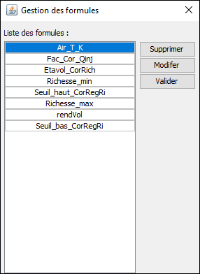

Pour créer une formule à partir des variables disponibles dans le log il faut aller dans le menu "Formules" puis "Nouvelle"
Une boite de dialogue pour l'édition de celle-ci :
/!\ Il est nécéssaire d'encadrer le nom de chaque variable issue du log par le caractère # /!\.
Pour les utilisateurs de PcsLab il y a la possiblité de créer des formules à partir des paramètres de calibration.
Gestion des formules :
Pour accéder au gestionnaire de formule il faut passer le menu "Formules", ensuite "Gestionnaire".
Au sein de cette fenêtre il sera possible de modifier une formule existente ou éventuellement d'en supprimer.

La sauvegarde des formules est intégrée à l'enregistrement du fichier de configuration.